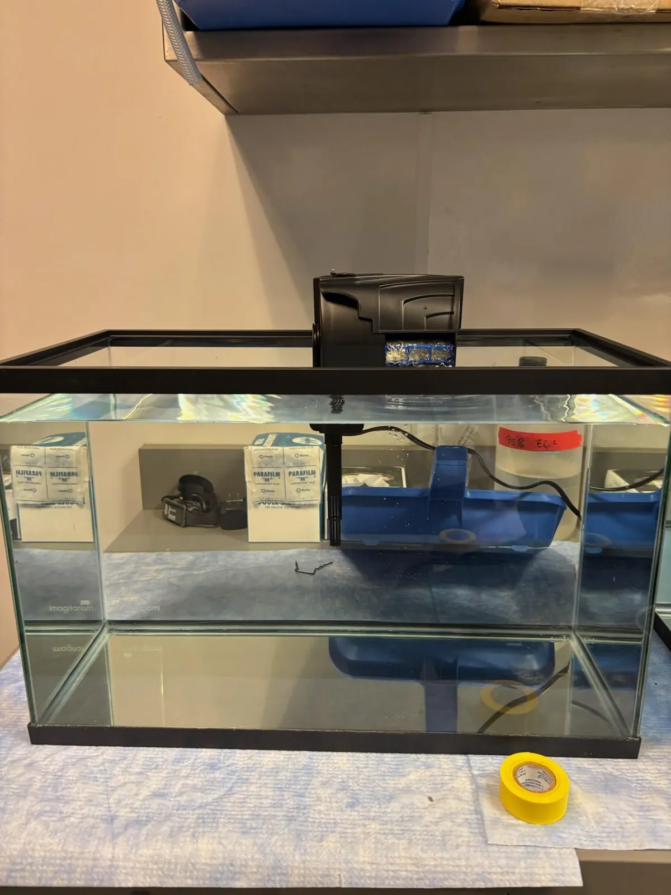
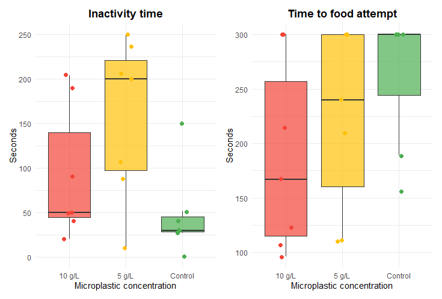
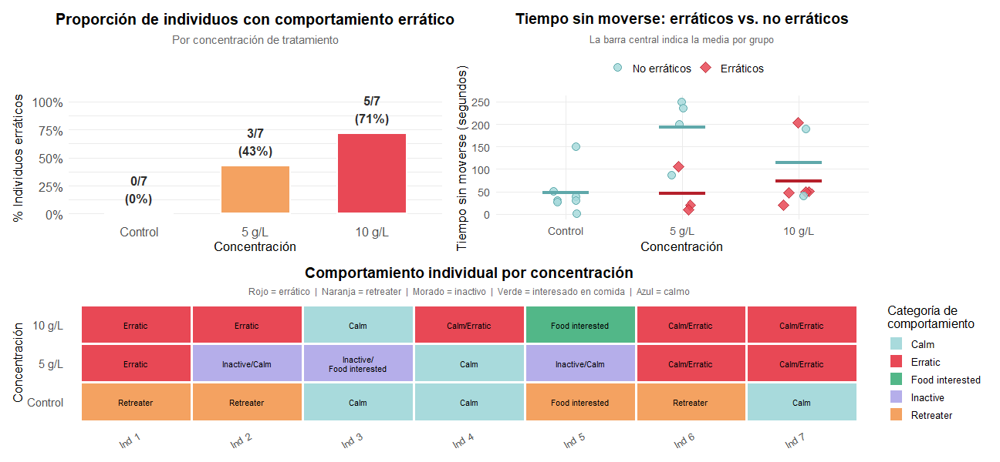
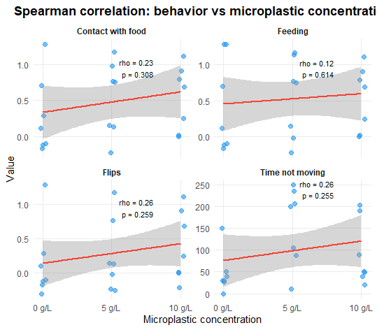
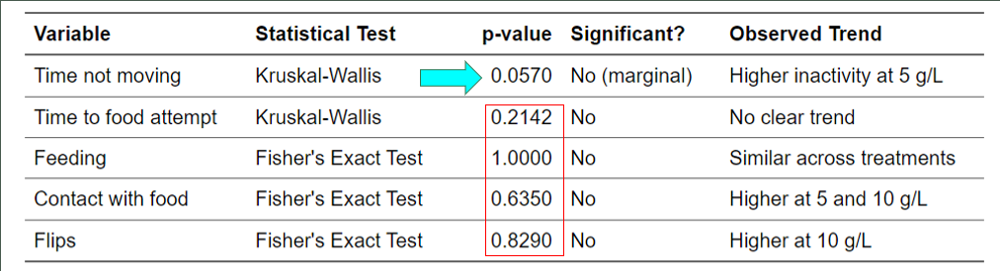

- Question
- Does microplastic exposure affect hermit crab behaviour?
- My role
- Results stage: data interpretation, figures, statistics and presentation of findings
- Design
- 0 · 5 · 10 g/L (nominal) × 7 crabs, 5-minute trials
- Result
- Clear directional patterns, but no test reached p < 0.05 (closest: p = 0.057)
- Tools
- R / RStudio · Kruskal–Wallis · Fisher's exact · Spearman
From raw observations to a careful conclusion.
Results analysis
Worked with the behavioural dataset to find the patterns across the three treatments that best explained the outcome.
Data visualisation
Developed and interpreted the figures on inactivity, food response, behaviour classes and dose-response trends.
Scientific communication
Presented the findings, separating visible trends from results that reached statistical significance.
Exposure, acclimation, observation.
Three 37.85 L seawater tanks held the control, 5 g/L and 10 g/L treatments, with polypropylene nurdles in perforated bags for about a week. Seven crabs per treatment were acclimated, then observed one by one for up to five minutes in a 15 cm dish with food placed on the opposite side. We recorded activity, food response and coordination (flipping, erratic movement).

No added nurdles.
One nurdle bag for 5 g/L; two for 10 g/L.
Same procedure for every crab.
How movement and food response were classified.
Patterns visible, evidence not conclusive.
Exposed crabs tended to be more inactive, more erratic and to flip more often. With seven crabs per treatment, none of these differences reached p < 0.05.

Inactivity and time to food attempt
Inactivity was lowest and most consistent in the control group and more variable in the exposed groups (Kruskal–Wallis, p = 0.057).
Time to food attempt showed no clear progressive pattern.

Behaviour classes by treatment
Calm or retreating responses dominated the control; behaviour was mixed at 5 g/L, and 5 of 7 crabs were classed as erratic at 10 g/L.
A descriptive pattern, not a significant effect.

Behaviour vs. concentration
Spearman correlations across 0, 5 and 10 g/L were weak and non-significant. Time not moving and flipping both showed rho ≈ 0.26.
Weak directional trends, not a demonstrated dose–response.

Tests used
Kruskal–Wallis for continuous variables (inactivity, time to food attempt) and Fisher's exact test for binary behaviours (feeding, contact with food, flipping), suited to the small sample.
A preliminary signal worth testing properly.
Behaviour may be affected at higher exposure, but the evidence is not enough to reject the null hypothesis.
Only 7 crabs per treatment, and the nurdles did not fully disperse, so 5 and 10 g/L are nominal, not measured, concentrations.
Larger samples, measured exposure concentrations and further behaviours such as shell selection or predator response.